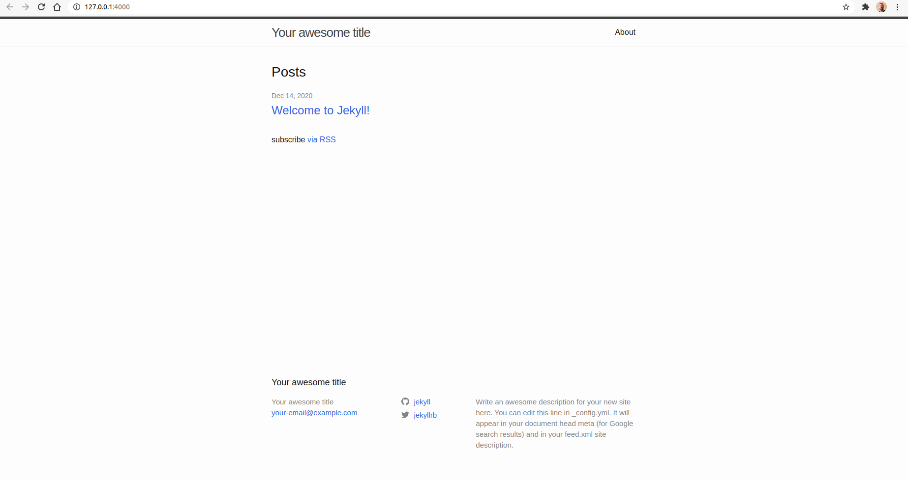
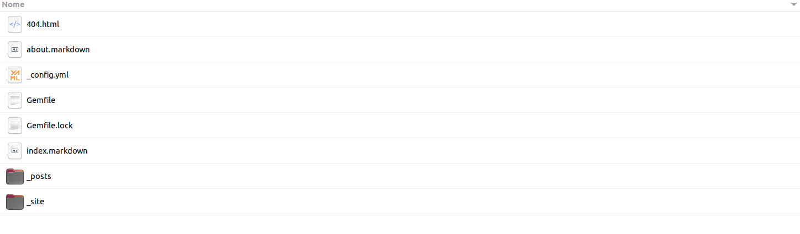
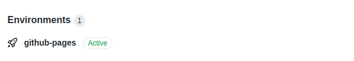
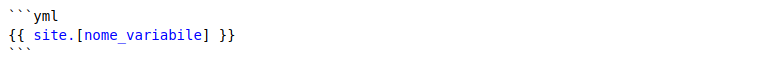

Crea il tuo sito tramite GitHub Pages e jekyll
Jekyll è un semplice generatore di siti statici, compatibile con i blog, per siti personali, di progetto o di organizzazione. Scritto in Ruby da Tom Preston-Werner, co-fondatore di GitHub, è distribuito con licenza open source MIT.
Consente di creare un sito statico grazie alla sola conoscenza del linguaggio markdown supportato nativamente da GitHub. Non è quindi richiesta una conoscenza dei linguaggi html e css. Dispone di una enorme quantità di temi gratuiti i quali consentono personalizzazioni più o meno avanzate. Per chi conosce i linguaggi html e css sarà possibile aggiungere elementi o modificare lo stile a piacimento.
Prerequisiti e installazione
Come ho già detto, non è richiesta una conoscenza dei linguaggi html e css a patto che tu conosca il linguaggio markdown. Jekyll si occuperà di convertire, tra le altre cose, la tue pagine markdown in pagine html. Per chi avesse la necessità di modificare il layout standard aggiungendo elementi o modificando lo stile nativo del tema al di fuori delle possibilità offerte dal creatore del tema sarà tuttavia richiesta una conoscenza intermedia dei linguaggi html e css. E' inoltre necessaria la conoscenza di git per la comunicazione con GitHUb
Sei pronto?
Per prima cosa devi installare jekyll e git per il tuo sistema operativo.
Installazione di jekyll su Ubuntu
Devi installare tutte le dipendenze: - ruby - rubygems - gcc - make
Il seguente comando installa tutte le dipendenze necessarie:
sudo apt-get install ruby-full build-essential zlib1g-dev
Evita di installare i pacchetti RubyGems (chiamati gems) come utente root. Invece, imposta una directory di installazione gem per il tuo account utente. I seguenti comandi aggiungeranno variabili d'ambiente al tuo file ~ / .bashrc per configurare il percorso di installazione di gem:
echo '# Install Ruby Gems to ~/gems' >> ~/.bashrc
echo 'export GEM_HOME="$HOME/gems"' >> ~/.bashrc
echo 'export PATH="$HOME/gems/bin:$PATH"' >> ~/.bashrc
source ~/.bashrc
Installa jekyll e bundler
gem install jekyll bundler
Con questa procedura installerai l'ultima versione di jekyll. Per verificare la versione installata digita:
jekyll -v
In generale la versione di jekyll appena installata differisce da quella utilizzata da GitHub Pages per il deploy (pubblicazione) di una pagina web. Per verificare la versione utilizzata da GitHub Pages, visita GitHub pages - Dependency versions.
Per evitare problemi consiglio di allinearsi alla versione di jekyll utilizzata da GitHub Pages ma solo in fase di creazione di un nuovo sito, quindi con un'installazione locale alla directory contente il progetto. Nei prossimi passaggi vedremo come fare..
Crea il tuo primo sito
Crea una nuova directory con un nome a piacere, ad esempio myWebPage.
Apri il terminale all'interno della repository appena creata e digita il comando per creare una nuova base per il sito.
jekyll new .
Adesso, lanciando il comando:
jekyll serve
Dovrebbe rispondere con qualcosa del genere:
Configuration file: /home/s/Repository/myWebPage/_config.yml
Source: /home/s/Repository/myWebPage
Destination: /home/s/Repository/myWebPage/_site
Incremental build: disabled. Enable with --incremental
Generating...
Jekyll Feed: Generating feed for posts
done in 0.211 seconds.
Auto-regeneration: enabled for '/home/s/Repository/myWebPage'
Server address: http://127.0.0.1:4000/
Server running... press ctrl-c to stop.
Raggiungi l'indirizzo indicato dal campo Server address, nel mio caso http://127.0.0.1:4000/, da terminale è sufficiente un Ctrl + click o semplicemente copiando l'indirizzo su browser web.
A questo punto dovresti vedere l'anteprima del tuo sito. Di default verrà impostato un tema dal nome minima

Non ti preoccupare adesso dei contenuti, avrai modo di configurarli con calma una volta finito il setup. Come dicevo, adesso ti consiglio di allinearti alla versione di jekyll utilizzata da GitHub Pages. Apri la directory del progetto, nel mio caso myWebPage.
Troverai una serie di file:

La nostra concentrazione per adesso va ai file Gemfile, Gemfile.lock e _config.yml.
Apri il file Gemfile, troverai questo contenuto scritto nel linguaggio Ruby:
source "https://rubygems.org"
# Hello! This is where you manage which Jekyll version is used to run.
# When you want to use a different version, change it below, save the
# file and run `bundle install`. Run Jekyll with `bundle exec`, like so:
#
# bundle exec jekyll serve
#
# This will help ensure the proper Jekyll version is running.
# Happy Jekylling!
gem "jekyll", "~> 4.1.1"
# This is the default theme for new Jekyll sites. You may change this to anything you like.
gem "minima", "~> 2.5"
# If you want to use GitHub Pages, remove the "gem "jekyll"" above and
# uncomment the line below. To upgrade, run `bundle update github-pages`.
# gem "github-pages", group: :jekyll_plugins
# If you have any plugins, put them here!
group :jekyll_plugins do
gem "jekyll-feed", "~> 0.12"
end
# Windows and JRuby does not include zoneinfo files, so bundle the tzinfo-data gem
# and associated library.
platforms :mingw, :x64_mingw, :mswin, :jruby do
gem "tzinfo", "~> 1.2"
gem "tzinfo-data"
end
# Performance-booster for watching directories on Windows
gem "wdm", "~> 0.1.1", :platforms => [:mingw, :x64_mingw, :mswin]
Tra i commenti del file troviamo diverse indicazioni su come procedere per utilizzare GitHub Pages. In particolare devi impostare la versione di jekyll utilizzata da GitHub, nel mio caso 3.9.0, consultabile da GitHub pages - Dependency versions.
gem "jekyll", "~> 3.9.0"
e devi inserire anche la direttiva giusta per github-pages con l'attuale versione di GitHub Pages consultabile sempre da GitHub pages - Dependency versions. Nel mio caso la versione è la 209
gem "github-pages", "~> 209", group: :jekyll_plugins
Il file completo sarà:
source "https://rubygems.org"
# Hello! This is where you manage which Jekyll version is used to run.
# When you want to use a different version, change it below, save the
# file and run `bundle install`. Run Jekyll with `bundle exec`, like so:
#
# bundle exec jekyll serve
#
# This will help ensure the proper Jekyll version is running.
# Happy Jekylling!
gem "jekyll", "~> 3.9.0"
# This is the default theme for new Jekyll sites. You may change this to anything you like.
gem "minima"
#gem "minima", "~> 2.5"
# If you want to use GitHub Pages, remove the "gem "jekyll"" above and
# uncomment the line below. To upgrade, run `bundle update github-pages`.
gem "github-pages", "~> 209", group: :jekyll_plugins
# If you have any plugins, put them here!
group :jekyll_plugins do
gem "jekyll-feed", "~> 0.12"
end
# Windows and JRuby does not include zoneinfo files, so bundle the tzinfo-data gem
# and associated library.
platforms :mingw, :x64_mingw, :mswin, :jruby do
gem "tzinfo", "~> 1.2"
gem "tzinfo-data"
end
# Performance-booster for watching directories on Windows
gem "wdm", "~> 0.1.1", :platforms => [:mingw, :x64_mingw, :mswin]
A questo punto puoi salvare ed eliminare il file Gemfile.lock. Questo file infatti contiene tutte le dipendenze ed è generato a partire dal file Gemfile. Ne dovrai generare uno nuovo.
Da terminale, all'interno della directory del progetto digita:
bundle install
Verrà generato un nuovo Gemfile.lock con tutte le dipendenze necessarie per GitHub Pages.
Adesso, per lanciare l'anteprima della pagina, non puoi più utilizzare il comando jekyll serve poichè tale comando invocherà la versione di jekyll installata globalmente sul tuo PC e quindi risulteresti non allineato. Dovrai lanciare il comando bundle exec jekyll serve come suggerito dal file Gemfile in modo da garantire che venga eseguita la versione di jekyll indicata dal file Gemfile e non quella installata su PC.
Digita quindi:
bundle exec jekyll serve
A questo punto sei quasi pronto per pubblicare il tuo sito tramite GitHub Pages.
Pubblica il sito su GitHub Pages
Crea una repository vuota e pubblica su GitHub. Ti consiglio di dare lo stesso nome della directory utilizzata nel progetto, nel mio caso myWebPage. Il nome appena creato coinciderà con la subdirectory dell'indirizzo della propria pagina web che nel mio caso sarà: https://sidiri-8bit.github.io/myWebPage/.
Adesso torna alla directory del progetto e aggiungiamo quindi il subpath myWebPage all'interno del file _config.yml,
baseurl: "/myWebPage" # the subpath of your site, e.g. /blog
Il file completo sarà una cosa del genere:
# Welcome to Jekyll!
title: Your awesome title
email: your-email@example.com
description: >- # this means to ignore newlines until "baseurl:"
Write an awesome description for your new site here. You can edit this
line in _config.yml. It will appear in your document head meta (for
Google search results) and in your feed.xml site description.
baseurl: "/myWebPage" # the subpath of your site, e.g. /blog
url: "" # the base hostname & protocol for your site, e.g. http://example.com
twitter_username: jekyllrb
github_username: jekyll
# Build settings
theme: minima
plugins:
- jekyll-feed
A questo punto lancia nuovamente il comando:
bundle exec jekyll serve
Bene, sei pronto a trasformare la directory nella repository GitHub che ospiterà la tua pagina web. Tramite git digita:
git init
git add .
git commit -m "initial"
git branch -M master
git remote add origin git@github.com:sidiri-8bit/myWebPage.git
git push -u origin master
url: "" # the base hostname & protocol for your site, e.g. http://example.com
twitter_username: jekyllrb
github_username: jekyll
ina web. Apri la Repository e vai su Settings, sezione GitHub Pages. Seleziona il branch master, premi il tasto Save, una volta aggiornata la pagina, se torni alla sezione GitHub Pages dovresti trovare:
Your site is published at https://sidiri-8bit.github.io/myWebPage/
Cliccando sul link dovresti visualizzare la tua pagina. Sei online!
Attenzione al branch! Fintanto che farai le modifiche al sito ed eseguirai push sul branch master, GitHub effettuerà il deploy in automatico della tua pagina. Per evitare il deploy puoi utilizzare un altro branch, un branch di lavoro qualsiasi ad esempio changes ma ricorda che affinchè la pagina possa essere caricata dovrai effettuare il merge del tuo branch changes con il branch master
Non importa specificare un subpath per il tuo sito!
Se non vuoi specificare un subpath e pubblicare il sito come "https://[username].github.io/" la procedura è semplificata.
Crea una repository con il nome [username].github.io. Nel mio caso sarà sidiri-8bit.github.io.
La repository [username].github.io è speciale, infatti GitHub la identifica già come una repository pronta ad ospitare una pagina web e ad effettuare il deploy in automatico sul branch master. L'unica cosa che dovrai fare è caricare il contenuto del tuo sito su questa repository togliendo dal file _config.yml il subpath indicato attraverso parametro baseurl. Riporto il file _config.yml completo:
# Welcome to Jekyll!
title: Your awesome title
email: your-email@example.com
description: >- # this means to ignore newlines until "baseurl:"
Write an awesome description for your new site here. You can edit this
line in _config.yml. It will appear in your document head meta (for
Google search results) and in your feed.xml site description.
baseurl: "" # the subpath of your site, e.g. /blog
#url: "" # the base hostname & protocol for your site, e.g. http://example.com
twitter_username: jekyllrb
github_username: jekyll
# Build settings
theme: minima# Exclude from processing.
plugins:
- jekyll-feed
Temi jekyll
Adesso vedrai come impostare il tema just-the-docs . Questo tema, non essendo tra quelli ufficialmente supportati da GitHub va aggiunto in un atro modo. Ovviamente questa guida vale anche per altri temi.
Modifica il Gemfile inserendo al posto di:
gem "minima"
Il tema just-the-docs:
gem "just-the-docs"
Modifica file _config.yml inserendo al posto di:
theme: minima
remote_theme: pmarsceill/just-the-docs
Adesso cancella il file Gemfile.lock e lancia nuovamente:
bundle install
Per vedere l'anteprima lancia nuovamente il comando:
bundle exec jekyll serve
A questo punto esegui il commit e il push delle modifiche.
git add .
git commit -m "add other theme"
git push
Verrà eseguito il deploy in automatico.

L'anteprima di questo tema è una cosa del genere:

Come personalizzare un tema jekyll
Stai utilizzando un tema ma vorresti personalizzarlo a tuo piacimento aggiungendo stile css o elelmenti html?
Normalmente ogni tema dispone di una documentazione per la personalizzazione della propria pagina. Si tratta in generale di impostare certi parametri di alto livello nel file _config.yml o definire alcune variabili in qualche file ad un path particolare. Ad esempio per il tema just-the-docs è possibile creare un file con un nome a piacimento ad esempio my_schema.scss ad un percorso specifico, _sass/color_schemes/my_schema.scss e settare certe variabili (definite dal tema) come:
$link-color: $purple-100;
$sidebar-color: $grey-lt-100;
$content-width: 1000px;
consentendo di cambiare certi colori o ridefinire alcuni margini o proporzioni. Questo file deve essere aggiunto come build settings inserendo la seguente riga nel file _config.yml:
color_scheme: my_schema
Ovviamente queste modifiche sono limitate alle possibilità definite dal creatore del tema.
Aggiunta css
Per aver accesso ad una personalizzazione più profonda in genere viene data la possibilità di ridefinire completamente lo stile css sovraiscrivendo solo gli attributi che ci interessano. Nel caso del tema just-the-docs viene data la possibilità di creare un file con il nome specifico custom.scss al path _sass/custom/custom.scss. In questo modo utilizzando le regole css è possibile cambiare lo stile di ogni elemento della pagina.
Purtroppo, essendo un'operazione di basso livello richiede una conoscenza approfondita del linguaggio css e di comprendere la logica di layout con cui è stata progettata la pagina. Ti dovrai armare di pazienza e dello strumento Ispeziona del browser per risalire al selettore giusto per ottenere la modifica che ti serve. Potrete trovare inoltre lo stile completo css all'interno della cartella _site, nel mio caso si trova al path _site/assets/css/just-the-docs-default.css. Personalmente ho modificato abbondantemente lo stile css
Aggiunta html
Se non ti basta modificare lo stile css e vuoi aggiungere anche elementi html si può fare come sempre con una procedura di basso livello cioè sovraiscrivendo la pagina html che dovrebbe occuparsi di aggiungere questi elementi.
Da terminale, all'interno della root del tuo progetto digita bundle info [nome-tema]. In questo caso utilizzando il tema just-the-docs sarà:
bundle info just-the-docs
Risponderà con il path di installazione del tema
* just-the-docs (0.3.3)
Summary: A modern, highly customizable, and responsive Jekyll theme for documention with built-in search.
Homepage: https://github.com/pmarsceill/just-the-docs
Path: /home/s/gems/gems/just-the-docs-0.3.3
Raggiungi questa posizione e naviga tra le directory. Troverai le pagine html che generano il tuo sito. Devi copiare la pagina che ti interessa all'interno del tuo progetto allo stesso path.
Personalmente, per il tema just-the-docs, ho copiato la pagina default.html all'interno della directory _layouts e le pagine footer.html, head.html, nav.html all'interno della directory _includes. Dopo averle incollate localmente rispettando i path ho iniziato ad apportre delle modifiche, aggiungendo social-link o un logo, modificando il footer di default o la nav-bar. Per caricare le nuove modifiche è sufficiente lanciare il comando:
bundle exec jekyll serve
Personalizzazioni avanzate
Nel file yml come abbiamo già visto, sono definite delle variabili come title, description, github_username richiamate dalle pagine html attraverso la sintassi:

Ho dovuto usare un'immagine perchè jekyll cercherebbe di applicare la valorizzazione
# Welcome to Jekyll!
title: Your awesome title
email: your-email@example.com
description: >- # this means to ignore newlines until "baseurl:"
Write an awesome description for your new site here. You can edit this
line in _config.yml. It will appear in your document head meta (for
Google search results) and in your feed.xml site description.
baseurl: "" # the subpath of your site, e.g. /blog
#url: "" # the base hostname & protocol for your site, e.g. http://example.com
twitter_username: jekyllrb
github_username: jekyll
# Build settings
theme: minima
plugins:
- jekyll-feed
Io ad esempio ho utilizzato la variabile github_username per aggiungere un icona che punti al mio account github: